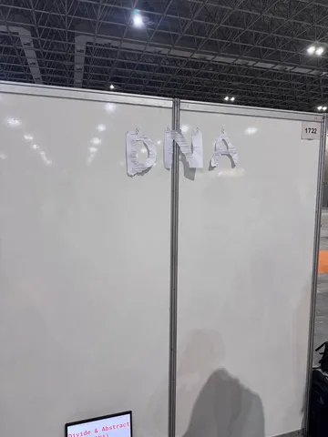
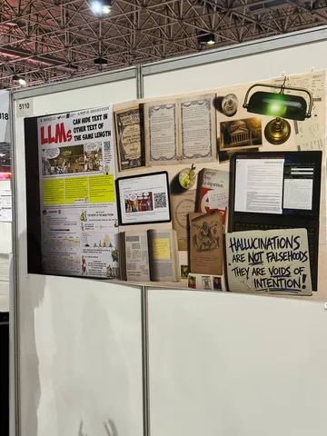
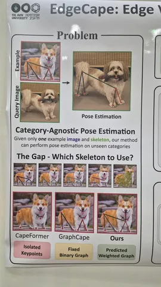
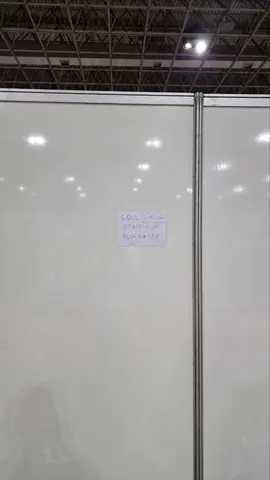
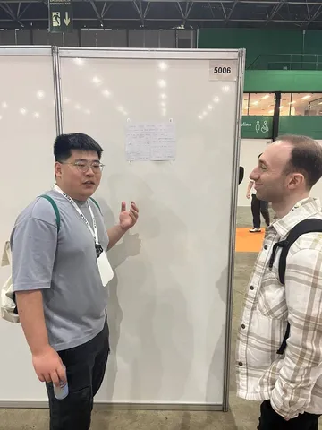
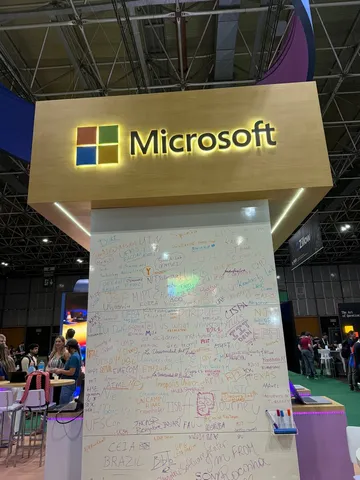
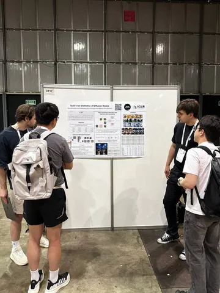

Продолжаем делиться фотографиями с конференции. В этот раз предлагаем:
— оценить технику цзяньчжи;
— поразглядывать постер, которому место в комиксе «Лечебница Аркхем»;
— собаку;
— запрыгнуть на хайптрейн в ожидании cool stuff, который running late;
— посмотреть на статью, которой нужен не большой постер, а только внимательный слушатель;
— поискать автограф Яндекса на стене Microsoft;
— полюбоваться на постер Yandex Research.
#YaICLR26
ML Underhood






